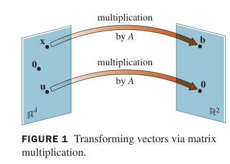
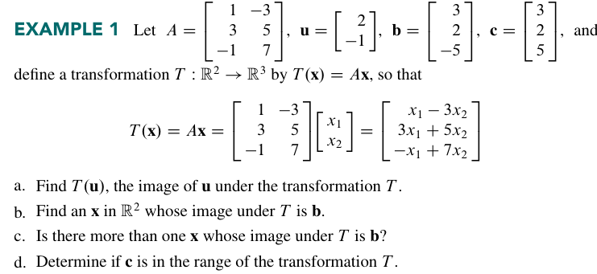
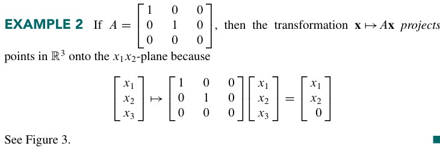
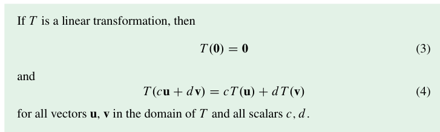
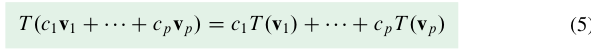

线性变换的介绍#
矩阵方程和与之相关的向量方程之间的差距只是一个 记号 上的差距。但是，一个在线性代数中的矩阵方程可以与向量的线性组合没有直接联系。这发生在我们把矩阵当作一个 算符 的时候。
也就是说，我们本来有一个向量 \(\vec{x}\)，\(A \vec{x}=\vec{b}\) 意味着我们把原来的向量 \(\vec{x}\) 通过算符 \(A\) 变成了向量 \(\vec{b}\)。
这是 映射 的感觉。我们把一个 \(ℝ^4\) 的向量空间映射到了 \(ℝ^2\) 上。更确切的说，这是 函数 的感觉，因为对于每一个确定的 \(\vec{x}\)，有且只有一个 \(\vec{b}\) 与其对应。这很美妙，不是吗？
下面这个图形象地说明了这种感觉：

下面是一个定义：
一个从 \(ℝ^n\) 到 \(\mathbb{R^m}\) 的 变换 \(\mathit{T}\) 是指一个从 \(ℝ^n\) 到 \(\mathbb{R^m}\) 的映射，\(ℝ^n\) 被称作 \(\mathit{T}\) 的 定义域 ，\(\mathbb{R^m}\) 被称为 \(\mathit{T}\) 的 陪域 。记为 \(\mathit{T}:ℝ^n\toℝ^m\)。
对于任意的 \(\vec{x}\inℝ^n\)，我们把 \(\mathit{T}(\vec{x})\inℝ^m\) 称作 \(\vec{x}\) 的 像，把像集称为 \(\mathit{T}\) 的 值域
矩阵变换#
我们有时会简记矩阵变换为这个形式：
我们来看 Example 1 的四个问题都是在问什么。

第一个问题就是在简单地做矩阵乘法
第二个问题就是在找解
第三个问题在问解的唯一性，也就是我们在 1.5 中讨论过的问题。
第四个问题是是否有解，这是一个 consistent 的判定，也可以用 1.5 的方法解决。
Example 2 是一个很有意思的矩阵，它把一个三维空间上的点投影到了\(x_1x_2-\)平面

这启发我们：可能不止 投影 这个几何操作对应着一个矩阵——所有的几何操作可能都对应着一个矩阵。
Example 3 的矩阵更有意思了，它被称作一个 shear transformation，它只拉伸图形的形状，但不改变它的面积/体积。
书上没有展开说这件事，我们可以自己研究一下它需要满足什么要求。
以二维为例。首先很显然的是，对于任意一个 \(2\times 2\) 的矩阵，它一般总能把一个线段映成另一条线段。因为：我们不妨设原先线段的两端点是 \((x_{1},y_{1}),(x_{2},y_{2})\)，设矩阵为：
对于一个列向量 \(\vec{c}=\begin{bmatrix} dx\\dy \end{bmatrix}\)，我们总有
而对两个点的映射分别是：\(\begin{bmatrix}a_{11}x_{1}+a_{12}y_{1} \\ a_{21}x_{1}+a_{22}y_{1}\end{bmatrix}\) \(\begin{bmatrix}a _{11}x_{2}+a _{12}y_{2} \\ a_{21}x_{2}+a_{22}y_{2}\end{bmatrix}\)，显然做差后得到的向量与 \(A\vec{c}\) 共线。
第二个核心问题是面积不变。我们先简单地考虑沿两个正方向的形变。例如：我们先让 x 方向的线段长度不变且方向不变。这样我们有如下的要求：
这要求 \(a_{11}=a_{22}=1,a_{21}=0\).
也就是说，\(A\) 要有如下形式：
同理，如果是 y 方向，那么就要有
的形式
两个相乘就是一般形式：
我们有时会看到这样一个形式：
这并不能保证面积守恒，所以并不属于剪切变换。只有当 \(\alpha\beta<<1\)才能这么做。
线性变换#
Theorem 05 告诉我们矩阵和向量的乘法是满足分配律的，以及乘法中常数的位置是无关紧要的。
这引出了一个很重要的定义：线性。
变换 \(\mathit{T}\) 满足这样两条性质就能被称为 线性。
- \(T(\vec{u}+\vec{v})=T(\vec{u})+T(\vec{v})\)
- \(T(c\vec{u})=cT(\vec{u})\)
要注意的是，这里并没有指定 \(T\) 的具体形式。也就是说，这个定义是可以推广的。不过，显然的是，所有矩阵变换都是线性变换，因为它们都满足这两条性质。
由这两条基础性质我们可以很容易的导出下面两条性质：

以及性质 4 有用的推广：

这一条也被称为 叠加原理(superposition principle)
Example 4 是一个简单的缩放。
Example 5 是一个旋转矩阵，很有意思。它把整个图形逆时针转了 \(90^\circ\)。
Example 6 是一个示例，展示线性变换如何将一种类型的数据转化为另一种类型的数据。